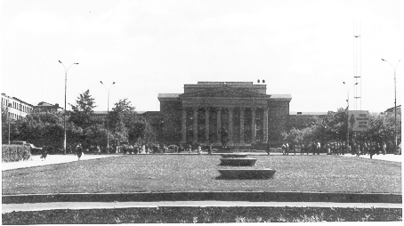
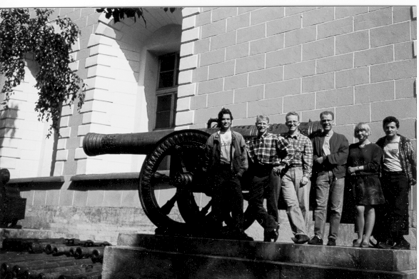
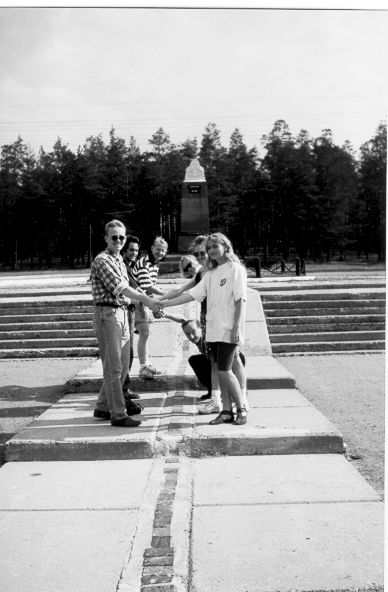

Detta är förmodligen den östligatse CAPS som någonsin genomförts. Vi lärde våra vänner reglerna och sen blev det mycket ryskt öldrickande.
Urals Polytechnical University
Vi och två av våra värdar på besök i Kreml. Kanonen är ett minne från Napolenkrigen.
Strax väster om Jekaterinburg finns en sten som markerar gränsen mellan Europa och Asien.

Okände soldatens grav i Kreml.